Guide · ASCE Concrete Canoe Finals · Cal Poly San Luis Obispo · June 27–29, 2025
Lessons from the 2025 Finals
Field notes from the Finals: 64 photos read display by display, what they reveal about how the best teams present, and a framework for building ours under the 2027 rules.
1 Florida · Reptilia2 Virginia Tech · Desperado3 Western Kentucky4 Texas A&M · Prosperity5 LavalBest Final Product: Virginia TechBest Presentation: LavalBest Proposal: Texas A&M
The booth is one built object, not a table with a poster.
A saloon bar (VT), a gator kiosk with a roof (Florida), a honeycomb wall (K-State), a jukebox (Washington), a caboose (UW-Madison), stage curtains (Cal Poly). The theme is the furniture itself.
The cross-section is a timeline you can touch.
The best run mold → layer → mesh → layer → sanding grits → stain → seal along one piece, with a readable label at every stage and real layer thicknesses.
Every ingredient in its own labeled jar.
Product name and particle size on each: “Poraver 0.5–1.0 mm”, “K37 glass bubbles”, “VCAS 160”. Several teams split the liquid admixtures into separate small bottles.
Most finalists sanded their way to smooth. We don’t want to.
Their raw layers were lumpy, then sanded up to 1000–1500 grit. That’s dusty, hard on a concave interior, and avoidable with a fine finish layer troweled well. See the mix notes.
Big numbers, and “better than last year.”
VT’s poster led with “25% thinner and 97 lb lighter” than their previous canoe, plus a spec table for each mix.
The theme doesn’t win by itself.
Florida won overall but placed 4th on Final Product. VT won it with the densest data. Theme earns attention. Evidence earns points.
The evidence
Photos cropped to the displays themselves.
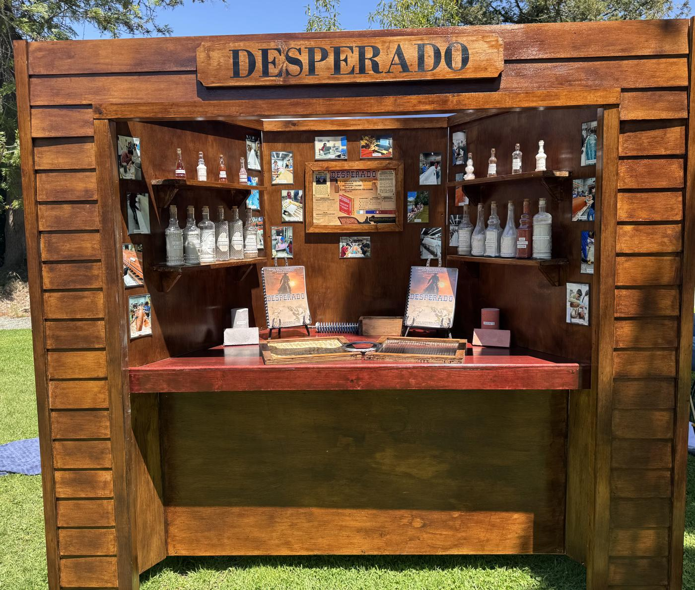
Virginia Tech: the booth as an object. A saloon bar. Materials in liquor bottles on the shelves, with the reports, samples and framed mesh on the bar top. Best Final Product.
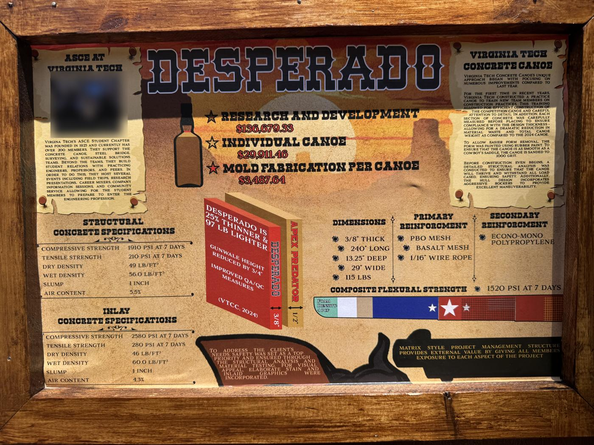
VT’s infographic. Cost, dimensions, reinforcement and one spec table per mix, plus a “25% thinner, 97 lb lighter” comparison with their previous canoe. Every number is readable from 4 ft.
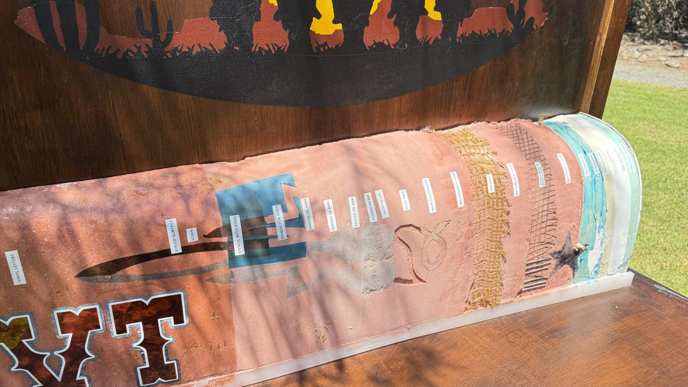
VT’s process strip. Three concrete layers and meshes, inlay placeholder → void → filled, sanded 60 → 200 → 400 → 1000 grit, stencil, stain, seal, vinyl. One object teaches the whole build.
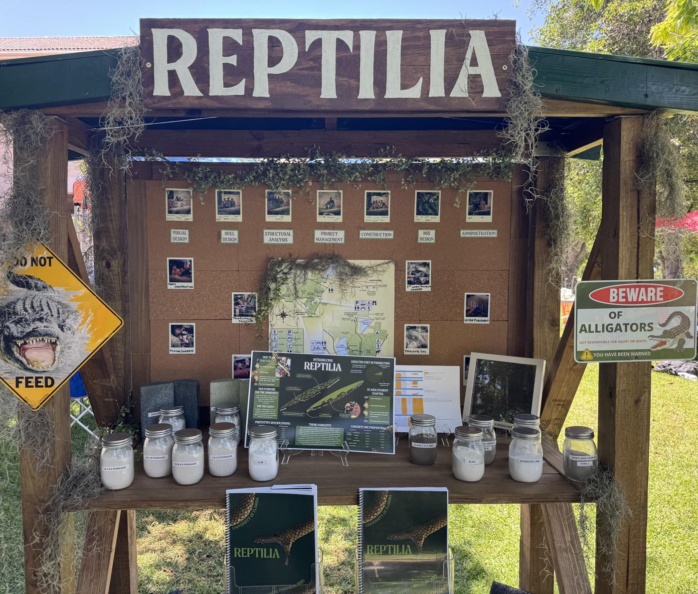
Florida: kiosk with a roof. Captioned photos grouped by sub-team, a one-page “Introducing Reptilia” poster, a mason-jar materials library and framed carbon mesh. Winner overall.
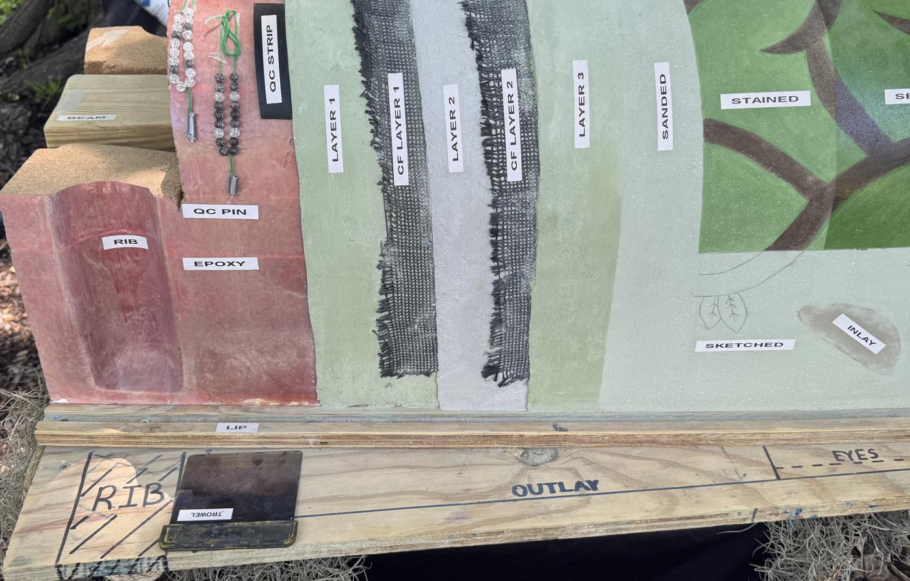
Florida’s cutaway with QC pins. Rib, epoxy, QC pin and strip, three layers with two carbon layers, then sanded and stained. A real trowel is mounted on the base, and bead strings on the pins show how thickness is checked.
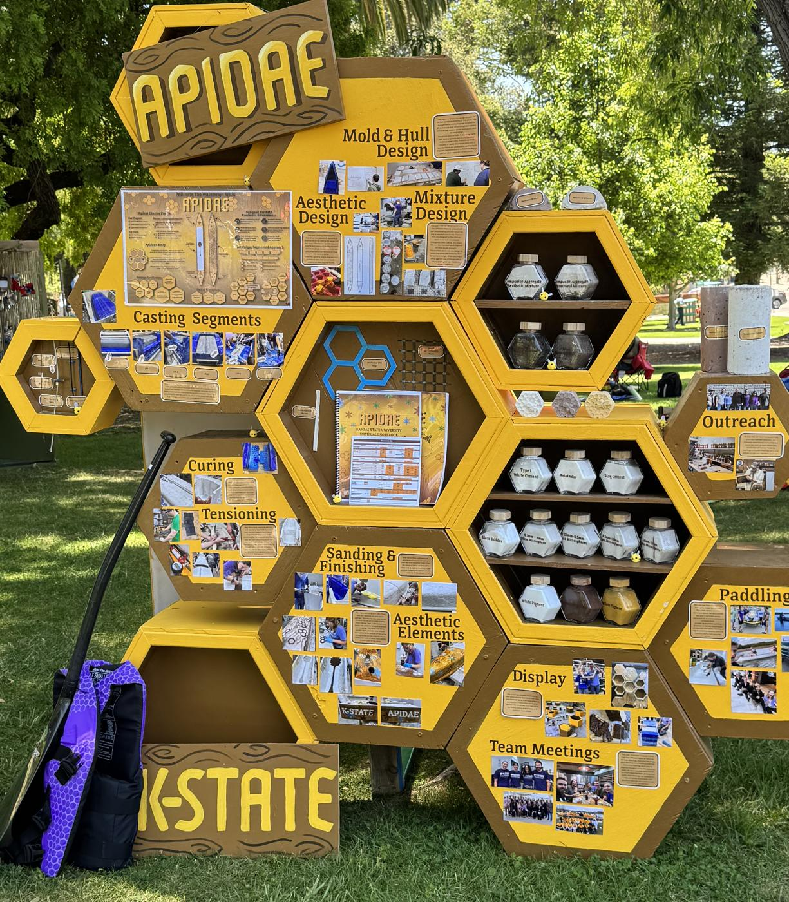
K-State: one hexagon per stage. Mold & Hull Design, Mixture Design, Casting Segments, Curing, Tensioning, Sanding & Finishing, Outreach. The build order is the layout, with jars inside the story.
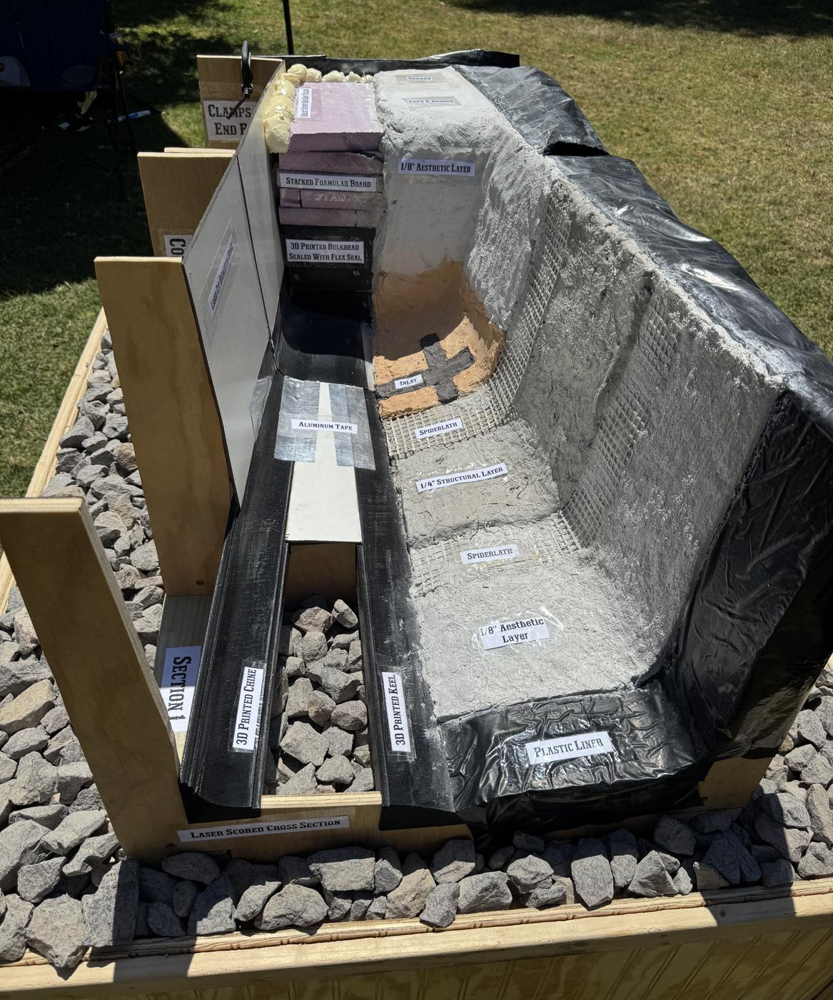
UW-Madison: thickness on the labels. ⅛″ aesthetic / Spiderlath / ¼″ structural / Spiderlath / ⅛″ aesthetic, stepped like stairs, with the mold system beside it. The clearest “why is it ½ inch” explanation seen.
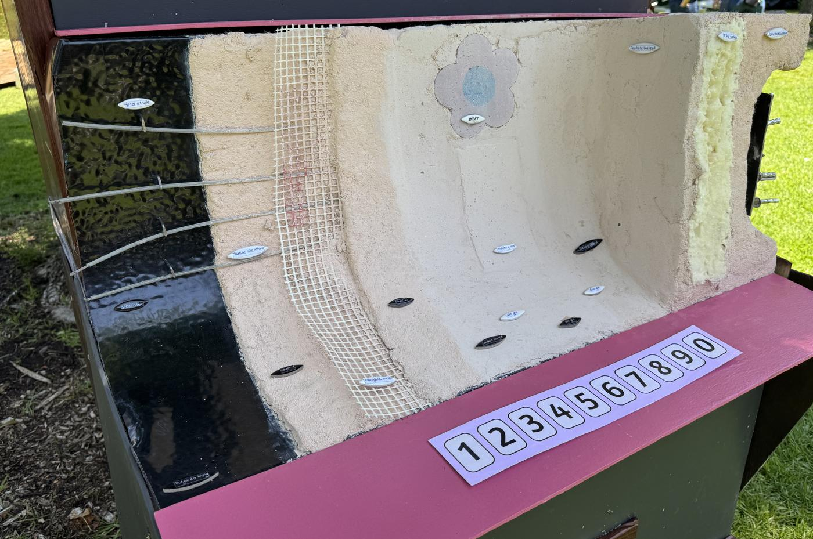
Washington: a true U-section. Polyurea lining, staples, cable, layer 1, fiberglass mesh, inlay, patching mix, foam bulkhead. A tag on every part, built into a jukebox with push buttons.
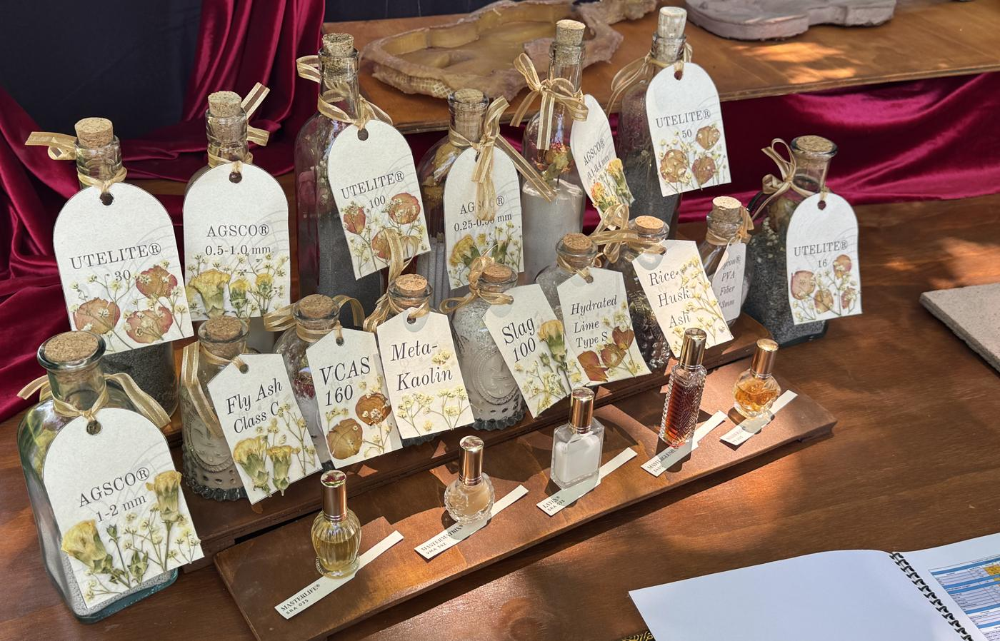
Cal Poly: dry vs. liquid. Dry ingredients in apothecary bottles, admixtures in perfume bottles, including a shrinkage reducer and what looks like a viscosity modifier.
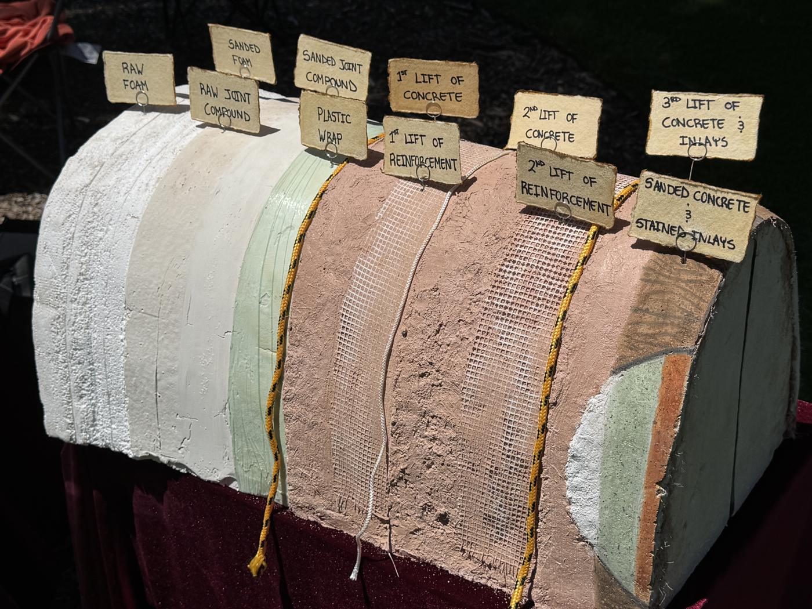
BYU: the cheap version. Raw foam → sanded foam → joint compound → plastic wrap → three lifts and two meshes → sanded and stained. Hand-lettered tags. Anyone could build this in a weekend.
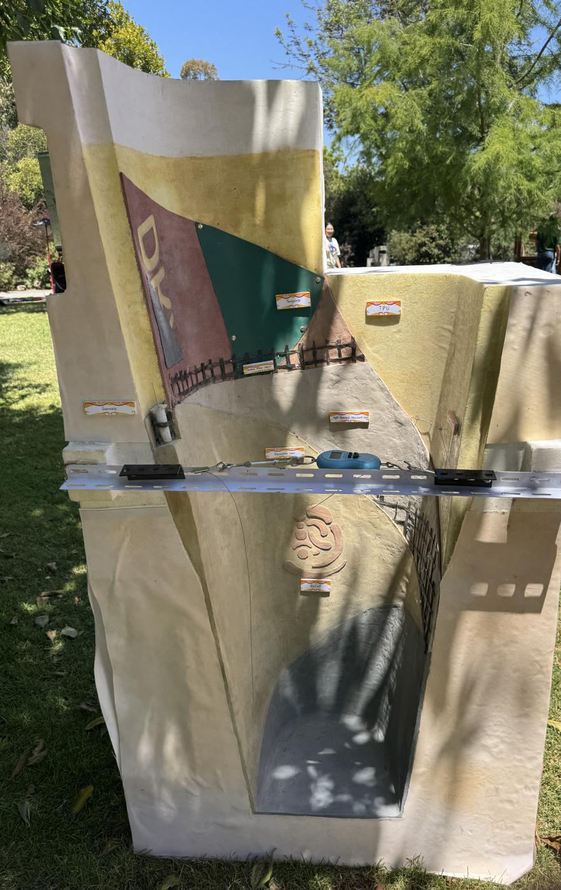
Tongji: something to do. A cable and hanging scale across the section let visitors pull and read a force, turning a static sample into a workshop.
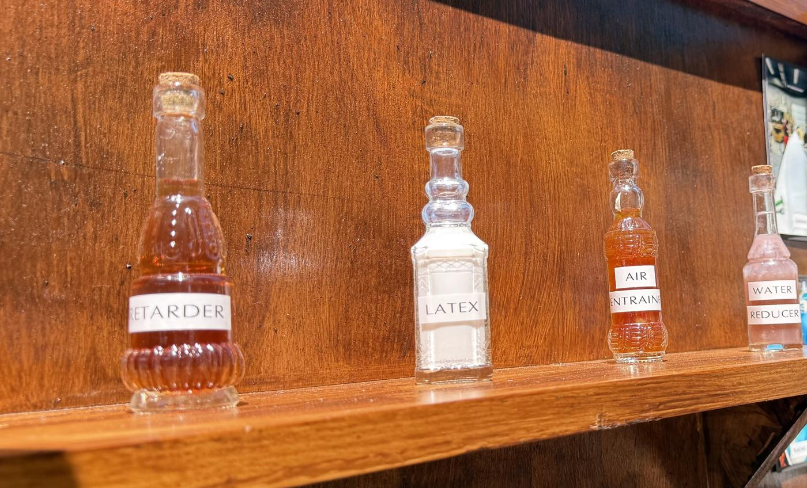
VT’s admixtures, bottled separately. Retarder, latex, air entrainer, water reducer. That’s also a list of troweling tools; see the mix notes.
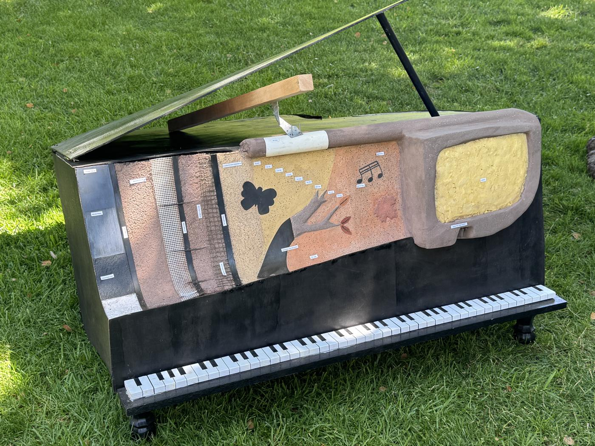
Avoid: labels you can’t read. A beautiful piano cutaway, but the layer labels are too small to read from standing height. A judge with under 10 minutes won’t bend down.
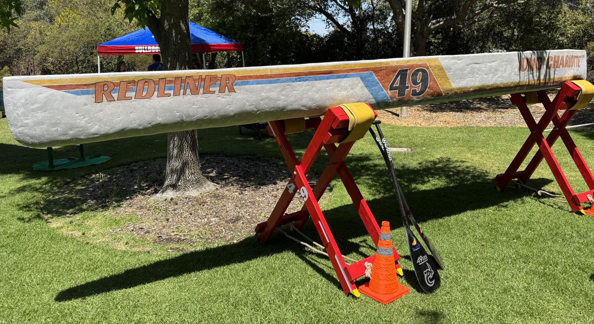
Avoid: paint over lumps. In raking sun, hand-troweled dents and ridges show straight through the paint. Surface quality is decided at the trowel. Paint, stain and sealer only make it more visible.
A framework for our display
Judges get under 10 minutes for the whole Final Product (canoe, cross-section, materials and display), and the elevator pitch comes out of that (§7.1). So design for three viewing distances, each with one job.
30 ft · 3 seconds
Who we are
One theme readable across a lawn: name sign, booth shape, canoe stands.
Pick a theme that can carry the process story (a recipe book, a workshop, a field guide), not just decorate it.
Canoe on stands, gunwale top about 4 ft up, underside visible (§7.2.3).
6 ft · 60 seconds
What we did
One infographic: dimensions, weight, each mix’s specs, reinforcement, cost, and one “vs. last year” headline.
The build as a sequence (hexagons, a skirt flowchart, a photo wall) with ≥ 12 captioned photos.
Three to five innovation cards, each a benefit plus how you did it.
Arm’s length · minutes
Prove it
The full-scale cross-section on its own stand: mold, raw → finished stages, a readable label on every element.
Jars with product name and size, split cylinders, a broken flexural sample, raw mesh.
Something to do: a grit strip to feel, a depth gauge to push, a stencil to try.
The judge’s walk
Lay the booth out so a judge moving left to right meets these in order. It doubles as the skeleton of the elevator pitch.
Canoe on stands: shape, finish, names above the waterline ~2 min
Cross-section: “here’s how every half inch is built” ~2 min
Infographic + innovation cards: the numbers and the one thing we’re proudest of ~2 min
Materials library: baseline mix → final mix, samples in hand ~2 min
Reports, cost breakdown, person-hours: in reach, not in the way ~1 min
Required items · §7.2
0 of 16 ready
Ticks are saved in this browser only.
2027 rules change what the 2025 finalists did
Molds by hand only (§6.2.1). CNC-routed outlays, 3D-printed modular molds, 3D-printed keels and TPU templates seen in 2025 would not be allowed as mold parts. CNC-made jigs and templates still are. Show that distinction on the cross-section; it’s this year’s story.
No sponsor items in the display (Table 8).
No hydrated lime (Exhibit 5). It was in the jars at five finalist displays. See the mix notes.
Results: ASCE Civil Engineering Source, UF Engineering. Team names and numbers are quoted only where legible in the photos. The checklist paraphrases RFP §7.2; read the RFP for exact wording.